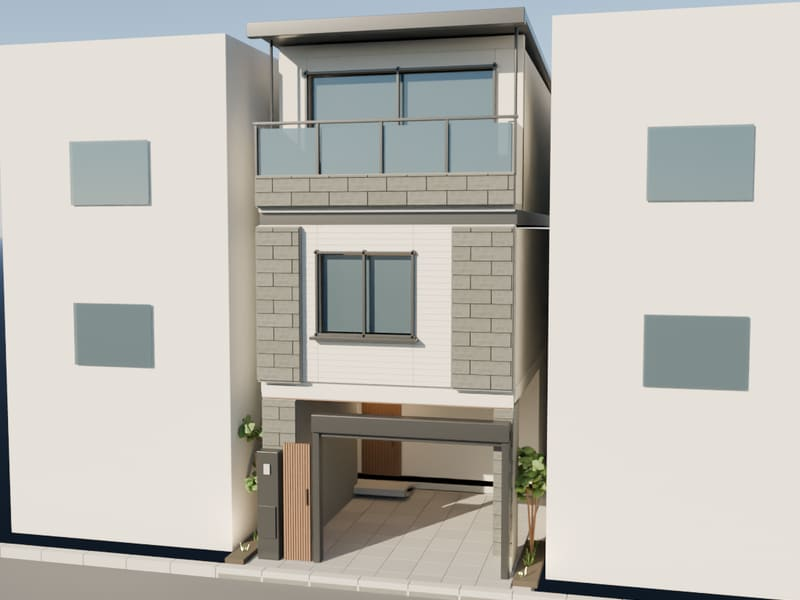
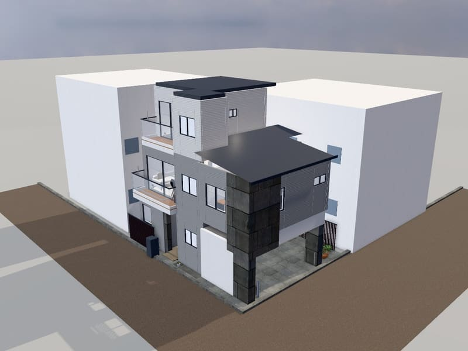

タイプを選んでください
図面寸法を基にした3Dで、外観から各階の室内まで歩いて見られます。
-

TYPE 02TYPE02
3階建て・ビルトインガレージ／2階 LDK 20.1帖
3Dで見る -

TYPE 06TYPE06
3階建て・ビルトインガレージ・東側玄関／2階 LDK 21.0帖（パントリー含む）
3Dで見る
本サイトはAtlinkが作成した非公式の参考イメージです。販売元・売主の公式コンテンツではありません。
間取り図を基に再現したもので、寸法・仕様・色柄・家具は実際と異なる場合があります。正式な内容は図面と公式情報をご確認ください。